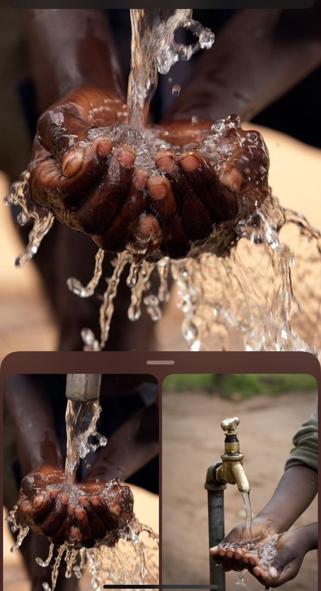

AFTER
BEFORE

AFTER

Established in 2020 ,our initiative was found in response to waterborne diseases and lack of portable water access in Rubaga. We begun by focusing on simple filtration techniques,envolving into a dedicated force for sustainable development through comprehensive WASH(water,sanitation and hygiene programmes.)
To make the world more health,productive and efficient

Constructing more latrines within the community
Educating people on how to keep the environment clean
Ensuring efficient water supply within different communities